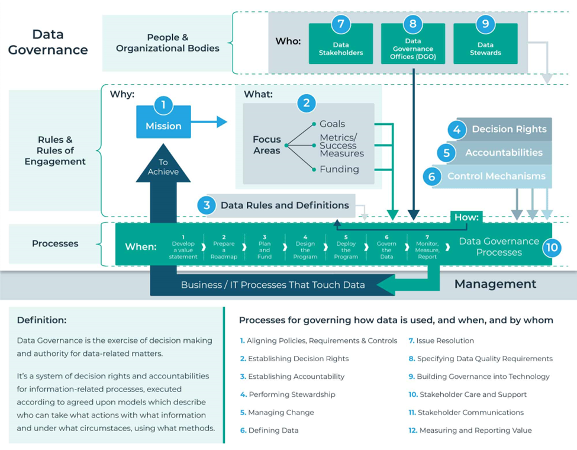

Artículo 3 Gobernanza de la información

3.1 Resumen
La gobernanza de datos ayuda a realizar una administración adecuada respecto de cualquier información peculiar; los datos de una organización se han convertido en un bien preciado que ayuda a la toma de decisiones y saber de qué manera mejorar un producto o un proceso; la gobernanza de datos ayuda también a hacer un análisis adecuado de datos y brindar información confiable.
3.2 Abstract
¿De qué manera ayuda la gobernanza de datos? Nos ayuda al momento en el que una organización crece demasiado y no es capaz de mantener sus datos de forma segura, ya que estos se vuelven complicados. La gobernanza de datos es una combinación de individuos, tecnologías y sistemas que trabajan juntos para proteger los datos de una organización.
3.4 Introducción
La gobernanza de datos está empezando a introducirse en empresas que desean tener una mejor gestión de datos, para determinar cómo dichos datos determinarán su propio éxito. Cada vez la transformación digital se hace presente y es necesario implementar un modelo que permita organizar y optimizar los procesos, lo cual incidirá en las finanzas, ventas, adquisiciones, producción, entre otros.
3.5 Artículo
Una gobernanza de datos es una combinación de individuos, tecnologías y sistemas que trabajan juntos para proteger los datos de una organización; esto garantiza que los mismos sean precisos, completos y fácilmente detectables para los empleados.
Hoy en día los datos se han convertido en el activo corporativo principal y determinan el éxito de un negocio. Realmente los negocios deberán adaptarse a la era digital de forma que los ayude a alcanzar sus objetivos.
La gobernanza de información tiene cuatro pilares elementales:
Administración de datos: un administrador de datos es el responsable de la información de una organización en colaboración con analistas y administradores de datos; tratan de identificar de qué manera se puede utilizar esta información.
Calidad de datos: mejorar la calidad de los datos es una actividad constante para una empresa; los mismos deben ser precisos, íntegros y coherentes; esto será señal de que los datos de una organización y su modelo de gobernanza sean exitosos.
Gestión de datos: establece un conjunto de datos sobre clientes, productos y otras entidades; esto puede garantizar que los datos sean coherentes.
Casos de uso: este pilar se centra en la manera en que serán utilizados los datos en las aplicaciones de un negocio inteligente y de cómo puede ayudar a una empresa y su entorno a reducir riesgos.
Para aplicar una gobernanza de datos en un negocio es necesario definir propietarios de datos y de qué manera los manejarán; se deben establecer políticas de acceso y reglas específicas para que los mismos se mantengan consistentes y actualizados.
También se debe definir cómo y en qué tipo de base serán almacenados estos datos; cada cuánto se les realizará respaldos y cómo serán protegidos. Toda esta información debe mantener un grado de transparencia para las personas interesadas, tales como inversionistas, clientes, entre otros. Finalmente establecer procedimientos de auditoría que aseguren el cumplimiento de las normas del gobierno.

Un ejemplo de la gobernanza de datos es la aplicación “Openstreetmap” la cual es un proyecto colaborativo para crear mapas editables y libres. Fue creado por el empresario británico Steve Coast en el 2004 y fue una respuesta, ya que existía una gran cantidad de fuentes de datos geográficos y ninguna estaba relacionada entre sí.
Todos los datos recopilados constituyen el aporte de colaboradores y están disponibles para cualquier persona; por tanto, es posible contribuir con información y consultar datos. Actualmente esta aplicación es utilizada por Facebook, MapQuest y FourSquare.
3.6 Conclusiones
Una gobernanza de datos ayuda al análisis adecuado de los mismos y una visión confiable de la información.
Este modelo propone definir propietarios, quienes serán encargados de gestionar los datos y mantenerlos actualizados.
La gobernanza de datos permite mantener un control de los suministros que una empresa adquiere.
3.7 Referencias
[1] [Amaresan, S. (2019)][The Straightforward Guide to Data Governance (DG). Hubspot.]. Recuperado de: https://acortar.link/Q6blb1. [Último acceso: 29 de octubre de 2022].
[2] [Gartner (2021)][Gartner Keynote: the future of business Is composable]. Recuperado de: https://acortar.link/kCsSZB. [Último acceso: 29 de octubre de 2022].
[3] [PowerData (s.f)][Data Governance y Data Lake: la política de datos a nuestro favor]. Recuperado de: https://acortar.link/bUbJYy. [Último acceso: 28 de octubre de 2022].
[4] [PowerData (s.f)][Desmitificando el Data Governance: qué, cuándo, dónde y por qué]. Recuperado de: https://acortar.link/FZv23S. [Último acceso: 29 de octubre de 2022].
[5] [PROFISEE (s.f)][Data Governance: What, why, how, who & 15 best practices]. Recuperado de: https://acortar.link/kCsSZB. [Último acceso: 29 de octubre de 2022].
[6] [Prometeus.(s.f)][Alinea los datos a la estrategia de tu organización, bienvenido al Data Governance. Consultado el 4 de marzo de 2019]. Recuperado de: https://acortar.link/kCsSZB. [Último acceso: 29 de octubre de 2022].